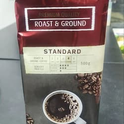
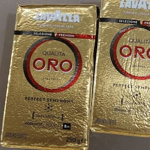
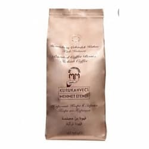
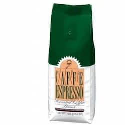
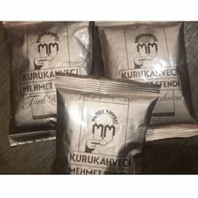
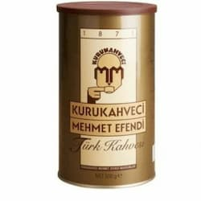
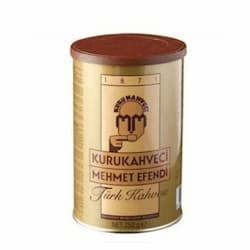
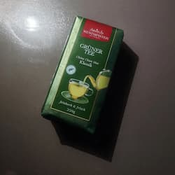
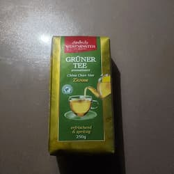
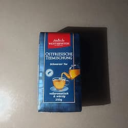

КАВА, ЧАЙ
-

Кава мелена Стандарт
Кава мелена Стандарт ― чудовий, натуральний німецький кофе, до складу якого входять добірні зерна Арабіки та найкращі боби азіатської Робусті. Ця суміш виробляється понад тридцять років на основі встановленого спочатку преміального стандарту якості. Rostfein Standard має густу. насичену консистенцію, чудовий щільний смак, бодрий аромат та нотки гіркого какао у тривалому післясмаку
Вага: 500 г
Ціна: 200 грн -

Молота кава Lavazza Quality Oro
Тип кави - мелена;
Склад - 100% арабіка;
Смак - інтенсивний з нотками какао;
Ступінь обсмажування - середня;
Інтенсивність - 5/10;
Ступінь помелу - середній помел (fine grind)Вага: 250 г
Ціна: 190 грн -

Кава в зернах KURUKAHVECI (Туреччина)
Кава в зернах по-Турецьки, смажена
Вага: 500 г
Ціна: 410 грн -

Кава в зернах ESPRESSO (Туреччина)
Кава в зернах ESPRESSO, смажена
Вага: 500 г
Ціна: 450 грн -

Кава мелена KURUKAHVECI (Туреччина)
Кава мелена Mehmet Efendi, дрібний помол
Вага: 100 г
Ціна: 90 грн -

Кава мелена KURUKAHVECI (Туреччина)
Кава мелена Mehmet Efendi, дрібний помол
Вага: 500 г
Ціна: 450 грн -

Кава мелена KURUKAHVECI (Туреччина)
Кава мелена Mehmet Efendi, дрібний помол
Вага: 250 г
Ціна: 240 грн -

Зелений чай "Westminster Gruner Tee Klassik" (Німеччина)
Німецький зелений листовий заслуговує на увагу кожного любителя смачного і ароматного чаю. Грюнер Ті Класік оцінять любителі натурального смаку чайного листя без ароматизаторів та смакових добавок
Вага: 250 г
Ціна: 190 грн -

Чай зелений Westminster "Gruner Tee Zitrone" (Німеччина)
Відчути насичений аромат зеленого чаю Ви зможете відразу. Цей чай має освіжаючий цитрусовий аромат і легку терпкість. Склад багатий на вітаміни і мікроелементи, сильний антиоксидант
Вага: 250 г
Ціна: 190 грн -

Чай чорний Westminster "Ostfriesische Teemischung" (Німеччина)
Для любителів натурального чаю, який чудово тонізує та надає бадьорості всьому тілу. Терпкий чорний чай з характером, має насичений смак та колір. Чай є сумішшю чорних чаїв Індії, Індонезії, Цейлону і Кенії. Westminster Tea - це унікальний чорний чай, для його виготовлення використовується середньолистовий чай. Має вишуканий смак і відмінну якість. Наділений тонізуючим ефектом, надає бадьорості та свіжості
Вага: 250 г
Ціна: 170 грн